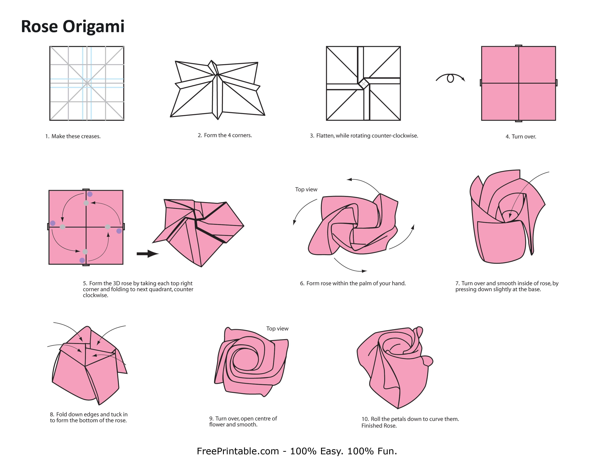

| Requerimientos | Especificación |
|---|---|
| Materiales necesarios | Un cuadrado de papel o cartulina de color y tamaño a elegir. |
| Dificultad | Fácil |
| Tiempo estimado | 10 min |
Vamos a dejar varios vídeos en los que se puede ver cómo hacer una rosa de papel paso a paso mediante una explicación sencilla.
Si con el vídeo no te aclaras te dejamos una imagen explicativa, con los pasos para hacer el corazón de origami. Recuerda tener paciencia y hacer cada paso sin arrugar la cartulina.
